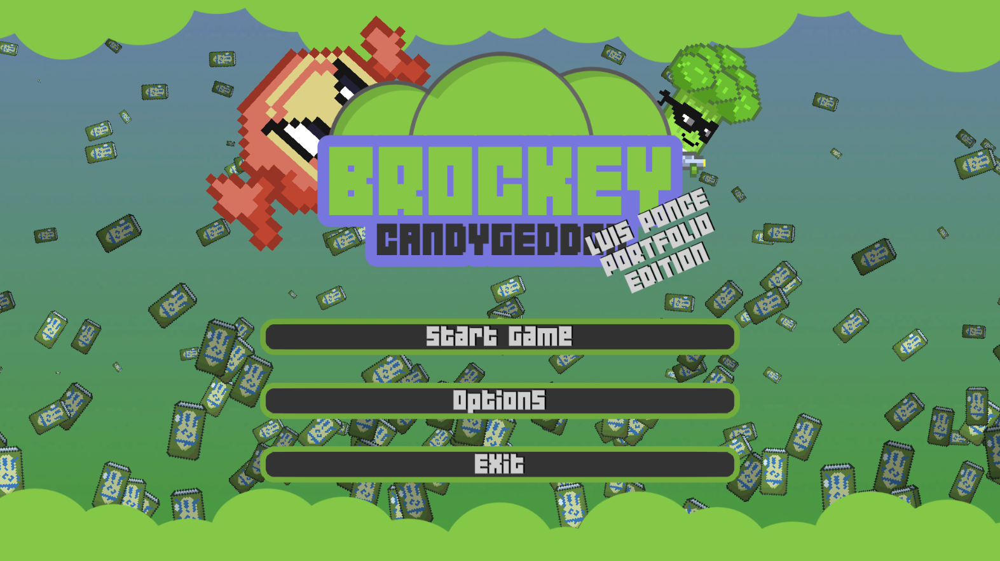

Brockey! · Dungeon crawler en desarrollo
Un dungeon crawler con un brócoli por héroe.
Lo desarrollé con un amigo. Me gusta porque muestra que también le dedico tiempo a ideas propias y no solo al trabajo del día a día.

Proyectos destacados
Desde ideas personales hasta productos full-stack con despliegue real, me interesa construir cosas que se puedan usar.
Brockey! · Dungeon crawler en desarrollo
Lo desarrollé con un amigo. Me gusta porque muestra que también le dedico tiempo a ideas propias y no solo al trabajo del día a día.

Dex Tracker · Pokedex TCG
La construí para seguir la Pokedex nacional según las cartas TCG que tiene cada usuario, con búsqueda, filtros, progreso, detalle por Pokemon y un índice local de cartas para no depender de una API externa en runtime.
Pokedex Nacional TCG